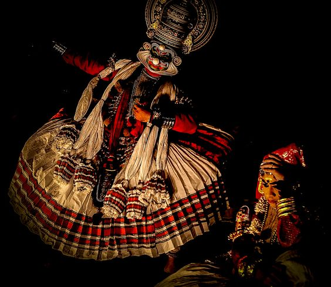

Kathakali

kathakali, one of the main forms of classical dance-drama of India, other major ones being bharata natyam, kathak, manipuri, kuchipudi, and odissi. It is indigenous to southwestern India, particularly the state of Kerala, and is based on subject matter from the Ramayana, the Mahabharata, and stories from Shaiva literature. Enacted outdoors, the presentation is an all-night function. During the action, voices chant the story as mimed by dancers; incidental dances, accompanied by ear-splitting drumbeats, enrich the performance. Traditionally, kathakali is performed exclusively by men and young boys who play the parts of both males and females. The dancers are dedicated to its practice throughout their lives.
The movement is vigorous and florid. Stylized gestures and facial expressions follow the rules of bharata natyam. Gestures are wide and strong, the pointing of a finger being preceded by a sweep of the body and a great circling of the arms. Faces are made up to look like painted masks. The costume consists of a full skirt, a heavy jacket, numerous garlands and necklaces, and a towering headdress.
A program of bharata natyam usually lasts two hours without interruption and includes a specific list of procedures, all performed by one dancer, who does not leave the stage or change costume. The accompanying orchestra—composed of drums, drone, and singer—occupies the back of the stage, led by the guru, or teacher, of the dancer.
In pure style, bharata natyam is classically clear in technique. The feet beat out complicated counter rhythms; the legs are bent in a characteristic low squat; arms, neck, and shoulders are part of the movement. In the pantomime sections, the hands tell the story through conventional gesture language, while the face expresses the mood. In the pure dance the hands are restricted to 11 mudras (symbolic hand gestures).